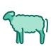

Padeži
Određeno (s članom al-) i neodređeno (s tenvinom), u tri padeža. Klikni oblik da ga čuješ.
| nominativ (-u) | akuzativ (-a) | genitiv (-i) | |
|---|---|---|---|
| jedninaodređeno | ◦ | ◦ | ◦ |
| jedninaneodređeno | ◦ | ||
| množinaodređeno | ◦ | ◦ | ◦ |
| množinaneodređeno | ◦ | ◦ | ◦ |
● oblik je u Kur'anu (pušta učača gdje ga Kur'an ima kao zasebnu riječ). ◦ standardni pravopis: oblik koji Kur'an nema, generisan i provjeren. Prazno polje: oblik se ne može pouzdano izgraditi.
Šta radi koji padež
Arapski ima tri padeža; bosanski sedam. Evo kako se slažu, na primjeru ove imenice.
Nominativ: subjekat — ko ili šta nešto radi ili jeste.
النَّعْجَةُ
ovca · bosanski nominativ
Akuzativ: objekat — koga ili šta.
النَّعْجَةَ
ovcu · bosanski akuzativ
Genitiv iza prijedloga — prijedlog bira bosanski padež.
إِلَى النَّعْجَةِ
k ovci · bosanski dativ
Genitiv iza prijedloga — prijedlog bira bosanski padež.
فِي النَّعْجَةِ
na ovci · bosanski lokativ
Genitiv kao posjednik (iḍāfa): „knjiga dječaka“.
صُوفُ النَّعْجَةِ
vuna ovce · bosanski genitiv
Posvojni nastavak: „njegov, njen, njihov…“.
نَعْجَتِكَ iz Kur'ana
tvoje ovce · bosanski genitiv
Rečenice za vježbu
subjekat (nominativ)
أَكَلَتِ النَّعْجَةُ الْعُشْبَ
Ovca je pojela travu.
objekat (akuzativ)
حَلَبَ الْفَلَّاحُ النَّعْجَةَ
Seljak je pomuzao ovcu.
iza prijedloga (genitiv)
أَعْطَى الْوَلَدُ مَاءً لِلنِّعَاجِ
Dijete je dalo vodu ovcama.
posjednik (genitiv)
صُوفُ النَّعْجَةِ نَاعِمٌ
Vuna ovce je mekana.
Sastavljene za vježbu, nisu iz Kur'ana.
U Kur'anu
akuzativ · jednina38:23 ↗Prijevod na islam.ba ↗ Riječ po riječ: quranwbw.com ↗
إِنَّ هَٰذَآ أَخِى لَهُۥ تِسْعٌ وَتِسْعُونَ نَعْجَةً وَلِىَ نَعْجَةٌ وَٰحِدَةٌ فَقَالَ أَكْفِلْنِيهَا وَعَزَّنِى فِى ٱلْخِطَابِنَعْجَةً = ovcu AI
نَعْجَةٌ = ovca AI
Cijeli ajet · Mishary Alafasy
genitiv · jednina38:24 ↗Prijevod na islam.ba ↗ Riječ po riječ: quranwbw.com ↗
قَالَ لَقَدْ ظَلَمَكَ بِسُؤَالِ نَعْجَتِكَ إِلَىٰ نِعَاجِهِۦ وَإِنَّ كَثِيرًا مِّنَ ٱلْخُلَطَآءِ لَيَبْغِى بَعْضُهُمْ عَلَىٰ بَعْضٍ إِلَّا ٱلَّذِينَ ءَامَنُوا۟ وَعَمِلُوا۟ ٱلصَّٰلِحَٰتِ وَقَلِيلٌ مَّا هُمْ وَظَنَّ دَاوُۥدُ أَنَّمَا فَتَنَّٰهُ فَٱسْتَغْفَرَ رَبَّهُۥ وَخَرَّ رَاكِعًا وَأَنَابَنَعْجَتِكَ = tvoje ovce AI
إِلَى نِعَاجِهِۦ = k njegovim ovcama AI
Cijeli ajet · Mishary Alafasy
Svi oblici u Kur'anu (4)
Riječ kako stoji u Kur'anu, s prijedlogom ispred nje kad ga ima. Klikni riječ da je čuješ od učača. Značenje je sastavljeno po pravilima (AI); gdje pravila ne sežu, stoji gramatika.
- 1×ovcu AI38:23 islam.ba wbw
- 1×ovca AI38:23 islam.ba wbw
- 1×tvoje ovce AI38:24 islam.ba wbw
- إِلَى1×k njegovim ovcama AI38:24 islam.ba wbw